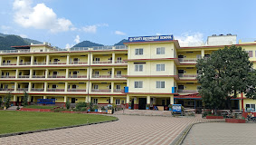
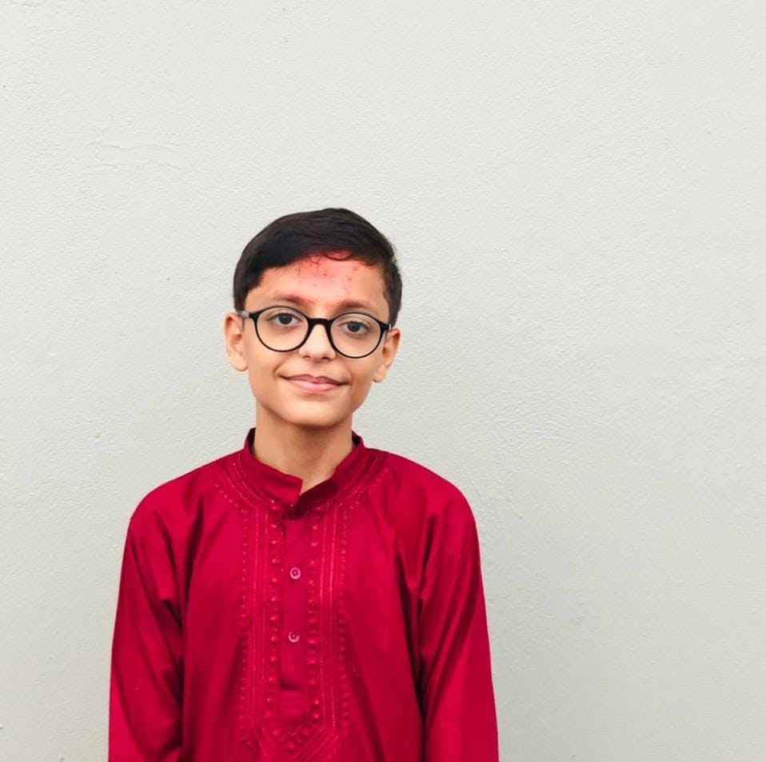

Curiosity, tested by experiment.
Kanti Science Club is a student-run community at Kanti Secondary School where we build, question, and demonstrate — through hands-on experiments, robotics, and an annual exhibition that turns the classroom into a laboratory.

About Kanti Science Club
Kanti Science Club is a student-led organization dedicated to promoting scientific learning, innovation, creativity, robotics, environmental awareness, astronomy, programming, and leadership among students.
Through workshops, science exhibitions, competitions, seminars, and community outreach programs, our club inspires students to solve real-world problems using science and technology.
Read More
President's Message
Welcome to the official website of Kanti Science Club. Our mission is to encourage students to think critically, explore scientific ideas, and develop practical skills through innovative activities.
Together, let's build a culture of curiosity, research, teamwork, and innovation.
— Club President
Science, outside the syllabus.
We give students at Kanti Secondary School a place to ask "what if," build a working answer, and show it to the school and community.
Learn by building
Weekly sessions on electronics, robotics, chemistry demos and CAD — led by senior members and teacher advisors.
Exhibit yearly
Every project gets a stage at our Annual Science Exhibition, open to parents, teachers and the wider community.
Compete & represent
We send teams to inter-school quizzes, science fairs and olympiads representing Kanti Secondary School.
Want to build something this term?
Become part of an innovative community that explores science, robotics, engineering, technology, and creativity.
Get in touch